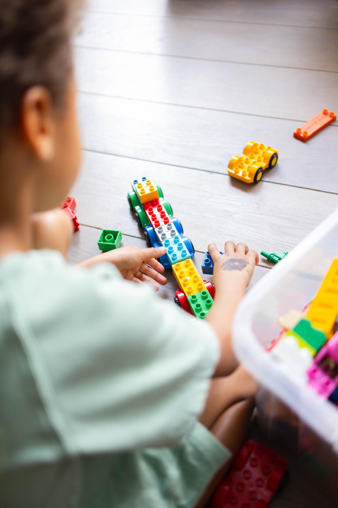

Een traject in vijf stappen.
Orthopedagogische ondersteuning betekent: samen met het kind, de ouders en de omgeving zoeken naar wat een kind nodig heeft om te groeien, thuis, op school en in het dagelijks leven. Dat gebeurt bij CederStam in vijf duidelijke stappen.

Wat ik aanbied
Sociaal-emotionele begeleiding
Ondersteuning bij gevoelens, zelfvertrouwen en de omgang met anderen.
Gedragsgerichte begeleiding
Inzicht in en een aanpak voor uitdagend gedrag, thuis en op school.
Autismebegeleiding
Begeleiding op maat rond structuur, communicatie, emoties, sociale situaties en dagelijks functioneren.
Ontwikkelingsgerichte begeleiding
Ondersteuning bij taal, motoriek en algemene ontwikkeling, in het tempo van je kind.
Opvoedingsondersteuning
Praktische ondersteuning voor ouders rond gedrag, communicatie, grenzen, routines en concrete strategieën thuis.
Samenwerking met school
Waar nodig, en steeds met jouw toestemming, stem ik af met de school van je kind voor een consistente aanpak.
Kennismaking
Een vrijblijvend, laagdrempelig gesprek (telefonisch of in levenden lijve) waarin we kennismaken en jouw vraag en de situatie van je kind bespreken.
Observatie & analyse
Ik breng de sterktes en noden van je kind in kaart, eventueel in overleg met school (met jouw toestemming).
Begeleidingsplan op maat
Samen met jou stel ik haalbare, concrete doelen op, afgestemd op het tempo en de talenten van je kind.
Individuele begeleiding
Regelmatige, speelse en multisensoriële sessies waarin je kind stap voor stap groeit, met oog voor plezier en zelfvertrouwen.
Opvolging & evaluatie
We evalueren regelmatig de vooruitgang, sturen bij waar nodig en verwijzen door naar gespecialiseerde hulp indien dat aangewezen is.
Dit vijfstappenplan is een werkversie op basis van jouw briefing. Laat het weten als je het traject anders wil benoemen of indelen. Dan passen we de tekst en structuur samen aan.
Kijken naar het hele kind
Meer dan de moeilijkheid alleen
Orthopedagogische begeleiding kijkt niet enkel naar wat moeilijk gaat, maar naar het kind in zijn geheel: zijn talenten, zijn gezin, zijn school en zijn omgeving.
Samenwerking staat centraal
Ouders en school werken samen, met het kind altijd in het midden van de aanpak.